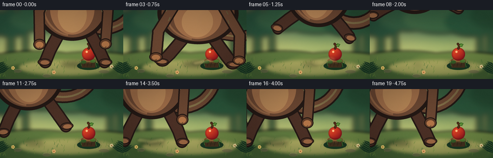
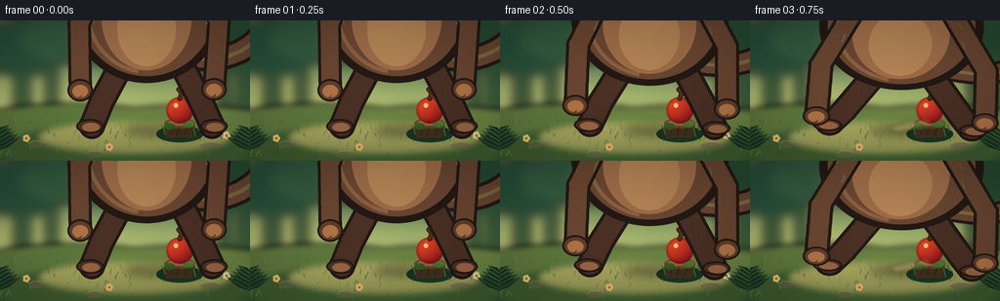
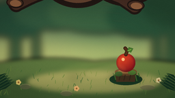
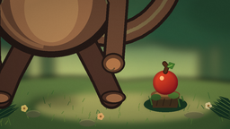
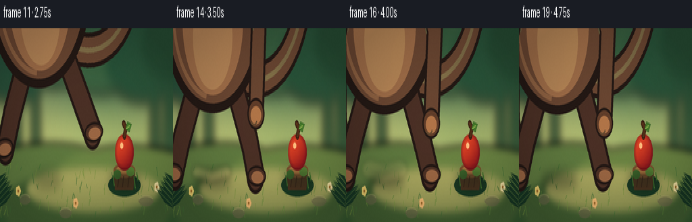

CODING AGENTS AS PIXEL WORLD MODELS
traex/DeepSeek-V4.1-Flash · dynamic_spatial_relationship_0061
点击播放 · 原生 RGB 像素
逐轮保存的候选
回放视频、检查图与代码变化。
每份候选均可单独播放。实际图片检查记录在下方工具轨迹中。
候选 01播放与检查图
点击播放 · 原生 RGB 像素


展开代码变化
--- 上一保存版本
+++ 本次保存版本
@@ -0,0 +1,736 @@
+from __future__ import annotations
+
+import math
+import random
+from pathlib import Path
+
+import numpy as np
+from PIL import Image, ImageDraw, ImageFilter
+
+import artifact_io
+
+
+WIDTH = 256
+HEIGHT = 144
+FRAMES = 20
+FPS = 4.0
+SUPERSAMPLE = 4
+CW = WIDTH * SUPERSAMPLE
+CH = HEIGHT * SUPERSAMPLE
+
+
+def rgba_layer() -> Image.Image:
+ return Image.new("RGBA", (CW, CH), (0, 0, 0, 0))
+
+
+def composite(base: Image.Image, layer: Image.Image) -> Image.Image:
+ return Image.alpha_composite(base.convert("RGBA"), layer).convert("RGB")
+
+
+def gradient(size: tuple[int, int], stops: list[tuple[float, tuple[int, int, int]]]) -> Image.Image:
+ width, height = size
+ rows = np.zeros((height, 1, 3), dtype=np.float32)
+ for y in range(height):
+ t = y / max(1, height - 1)
+ left = stops[0]
+ right = stops[-1]
+ for index in range(len(stops) - 1):
+ if stops[index][0] <= t <= stops[index + 1][0]:
+ left, right = stops[index], stops[index + 1]
+ break
+ span = max(1e-6, right[0] - left[0])
+ u = max(0.0, min(1.0, (t - left[0]) / span))
+ u = u * u * (3.0 - 2.0 * u)
+ rows[y, 0] = np.array(left[1], dtype=np.float32) * (1.0 - u) + np.array(right[1], dtype=np.float32) * u
+ arr = np.repeat(rows, width, axis=1).astype(np.uint8)
+ return Image.fromarray(arr, "RGB")
+
+
+def bezier(points: list[tuple[float, float]], count: int = 48) -> list[tuple[float, float]]:
+ p0, p1, p2, p3 = points
+ result = []
+ for index in range(count):
+ t = index / (count - 1)
+ u = 1.0 - t
+ x = u**3 * p0[0] + 3 * u * u * t * p1[0] + 3 * u * t * t * p2[0] + t**3 * p3[0]
+ y = u**3 * p0[1] + 3 * u * u * t * p1[1] + 3 * u * t * t * p2[1] + t**3 * p3[1]
+ result.append((x, y))
+ return result
+
+
+def capsule(
+ draw: ImageDraw.ImageDraw,
+ points: list[tuple[float, float]],
+ width: float,
+ fill: tuple[int, ...],
+ outline: tuple[int, ...] | None = None,
+ outline_extra: float = 0.0,
+) -> None:
+ if outline is not None:
+ draw.line(points, fill=outline, width=round(width + outline_extra), joint="curve")
+ radius = (width + outline_extra) / 2
+ for x, y in points:
+ draw.ellipse((x - radius, y - radius, x + radius, y + radius), fill=outline)
+ draw.line(points, fill=fill, width=round(width), joint="curve")
+ radius = width / 2
+ for x, y in points:
+ draw.ellipse((x - radius, y - radius, x + radius, y + radius), fill=fill)
+
+
+def leaf_polygon(
+ draw: ImageDraw.ImageDraw,
+ start: tuple[float, float],
+ end: tuple[float, float],
+ width: float,
+ fill: tuple[int, ...],
+ outline: tuple[int, ...] | None = None,
+) -> None:
+ sx, sy = start
+ ex, ey = end
+ dx, dy = ex - sx, ey - sy
+ length = max(1e-5, math.hypot(dx, dy))
+ nx, ny = -dy / length, dx / length
+ mx, my = (sx + ex) / 2, (sy + ey) / 2
+ points = [
+ start,
+ (mx + nx * width * 0.52, my + ny * width * 0.52),
+ end,
+ (mx - nx * width * 0.52, my - ny * width * 0.52),
+ ]
+ draw.polygon(points, fill=fill, outline=outline)
+
+
+def draw_apple(base: Image.Image, cx: float, cy: float, radius: float) -> None:
+ scale = SUPERSAMPLE
+ x0 = round((cx - radius * 1.25) * scale)
+ y0 = round((cy - radius * 1.25) * scale)
+ x1 = round((cx + radius * 1.25) * scale)
+ y1 = round((cy + radius * 1.25) * scale)
+ local_w, local_h = x1 - x0, y1 - y0
+ yy, xx = np.mgrid[0:local_h, 0:local_w]
+ local_cx = (cx - x0 / scale) * scale
+ local_cy = (cy - y0 / scale) * scale
+ r = radius * scale
+
+ # A lightly lobed apple silhouette.
+ nx = (xx - local_cx) / (r * 1.03)
+ ny = (yy - local_cy) / (r * 1.10)
+ lobe = 1.0 + 0.045 * np.cos(np.arctan2(ny, nx) * 2.0)
+ dist = np.sqrt((nx / lobe) ** 2 + (ny / lobe) ** 2)
+ inside = dist <= 1.0
+
+ light = np.clip(0.36 + 0.62 * (-0.52 * nx - 0.72 * ny) + 0.17 * (1.0 - dist), 0.0, 1.25)
+ red = np.array([151, 29, 31], dtype=np.float32)
+ gold = np.array([236, 77, 41], dtype=np.float32)
+ shade = np.array([78, 16, 28], dtype=np.float32)
+ color = red[None, None, :] * (1.0 - np.clip(light, 0, 1)[..., None])
+ color += gold[None, None, :] * np.clip(light, 0, 1)[..., None]
+ edge = np.clip((dist - 0.72) / 0.28, 0, 1)[..., None]
+ color = color * (1.0 - 0.45 * edge) + shade[None, None, :] * (0.45 * edge)
+
+ alpha = (inside.astype(np.uint8) * 255)
+ apple = np.dstack([np.clip(color, 0, 255).astype(np.uint8), alpha])
+ apple_img = Image.fromarray(apple, "RGBA")
+ base.alpha_composite(apple_img, (x0, y0))
+
+ draw = ImageDraw.Draw(base)
+ s = scale
+ # Stem and leaf sit behind the fruit highlight.
+ capsule(
+ draw,
+ [(cx * s, (cy - radius * 0.92) * s), (cx * s + 2 * s, (cy - radius * 1.36) * s), (cx * s - 1 * s, (cy - radius * 1.62) * s)],
+ 3.2 * s,
+ (82, 48, 26, 255),
+ (46, 26, 18, 255),
+ 1.8 * s,
+ )
+ leaf_polygon(
+ draw,
+ ((cx + 1.5) * s, (cy - radius * 1.31) * s),
+ ((cx + radius * 0.83) * s, (cy - radius * 1.58) * s),
+ 8.0 * s,
+ (68, 122, 45, 255),
+ (33, 70, 31, 255),
+ )
+ draw.line(
+ [((cx + 3) * s, (cy - radius * 1.33) * s), ((cx + radius * 0.61) * s, (cy - radius * 1.51) * s)],
+ fill=(148, 183, 87, 180),
+ width=max(1, round(1.0 * s)),
+ )
+ # Crisp specular mark.
+ draw.ellipse(
+ (
+ (cx - radius * 0.47) * s,
+ (cy - radius * 0.54) * s,
+ (cx - radius * 0.13) * s,
+ (cy - radius * 0.18) * s,
+ ),
+ fill=(255, 190, 132, 165),
+ )
+
+
+def draw_stump(draw: ImageDraw.ImageDraw) -> None:
+ s = SUPERSAMPLE
+ cx = 184
+ top = 104
+ bottom = 122
+ # Soft moss apron.
+ draw.ellipse(((cx - 24) * s, (top + 4) * s, (cx + 24) * s, (bottom + 3) * s), fill=(28, 61, 39, 255))
+ # Trunk body.
+ body = [
+ ((cx - 16) * s, (top + 1) * s),
+ ((cx + 16) * s, (top + 1) * s),
+ ((cx + 13) * s, (bottom - 2) * s),
+ ((cx - 14) * s, (bottom - 2) * s),
+ ]
+ draw.polygon(body, fill=(83, 57, 37, 255))
+ draw.ellipse(((cx - 16) * s, (top - 4) * s, (cx + 16) * s, (top + 7) * s), fill=(122, 83, 49, 255))
+ draw.ellipse(((cx - 12) * s, (top - 2) * s, (cx + 12) * s, (top + 4) * s), fill=(169, 117, 67, 255))
+ # Bark grooves and hanging moss.
+ for offset in (-8, -1, 7):
+ draw.line(
+ [((cx + offset) * s, (top + 6) * s), ((cx + offset - 2) * s, (bottom - 4) * s)],
+ fill=(63, 40, 28, 210),
+ width=round(1.2 * s),
+ )
+ draw.ellipse(((cx - 16) * s, (top + 1) * s, (cx - 5) * s, (top + 8) * s), fill=(64, 107, 48, 255))
+ draw.ellipse(((cx + 3) * s, (top - 1) * s, (cx + 15) * s, (top + 6) * s), fill=(88, 132, 57, 255))
+ for x, y, length in [(-17, 109, 8), (14, 110, 9), (18, 107, 6)]:
+ draw.line(
+ [((cx + x) * s, y * s), ((cx + x + 2) * s, (y + length) * s)],
+ fill=(73, 125, 53, 235),
+ width=round(1.5 * s),
+ )
+
+
+def make_background() -> Image.Image:
+ rng = random.Random(98217)
+ s = SUPERSAMPLE
+ base = gradient(
+ (CW, CH),
+ [
+ (0.00, (21, 56, 48)),
+ (0.28, (47, 92, 66)),
+ (0.57, (130, 160, 94)),
+ (0.76, (191, 184, 112)),
+ (1.00, (76, 99, 54)),
+ ],
+ )
+
+ # Soft sunlight entering from the upper left.
+ glow = rgba_layer()
+ gd = ImageDraw.Draw(glow)
+ gd.ellipse((-150 * s, -170 * s, 520 * s, 420 * s), fill=(255, 236, 165, 90))
+ gd.polygon(
+ [(55 * s, -20 * s), (150 * s, -20 * s), (245 * s, 110 * s), (170 * s, 120 * s)],
+ fill=(255, 239, 183, 32),
+ )
+ glow = glow.filter(ImageFilter.GaussianBlur(34 * s))
+ base = composite(base, glow)
+
+ # Distant trunks and soft canopy masses.
+ distant = rgba_layer()
+ dd = ImageDraw.Draw(distant)
+ for x, width, shade in [(16, 12, 37), (48, 8, 40), (224, 10, 39), (243, 15, 34)]:
+ dd.polygon(
+ [(x * s, 28 * s), ((x + width) * s, 24 * s), ((x + width + 5) * s, 99 * s), ((x - 3) * s, 99 * s)],
+ fill=(shade, 74, 51, 210),
+ )
+ for x, y, rx, ry, color in [
+ (23, 28, 48, 28, (28, 71, 55, 220)),
+ (80, 19, 61, 25, (38, 81, 59, 210)),
+ (145, 18, 75, 31, (48, 91, 61, 190)),
+ (213, 25, 58, 30, (32, 77, 55, 220)),
+ (252, 14, 43, 25, (30, 70, 49, 230)),
+ ]:
+ dd.ellipse(((x - rx) * s, (y - ry) * s, (x + rx) * s, (y + ry) * s), fill=color)
+ distant = distant.filter(ImageFilter.GaussianBlur(5 * s))
+ base = composite(base, distant)
+
+ # Mossy clearing and layered ground shadows.
+ ground = rgba_layer()
+ gd = ImageDraw.Draw(ground)
+ gd.rectangle((0, 96 * s, CW, CH), fill=(50, 84, 48, 255))
+ gd.ellipse((-25 * s, 85 * s, 170 * s, 123 * s), fill=(93, 121, 66, 255))
+ gd.ellipse((86 * s, 87 * s, 296 * s, 128 * s), fill=(105, 132, 70, 255))
+ gd.ellipse((0, 106 * s, CW, 158 * s), fill=(64, 93, 51, 255))
+ gd.ellipse((40 * s, 104 * s, 235 * s, 136 * s), fill=(139, 146, 83, 170))
+ ground = ground.filter(ImageFilter.GaussianBlur(3 * s))
+ base = composite(base, ground)
+
+ # Painterly grass, stones, and tiny flowers.
+ detail = rgba_layer()
+ dd = ImageDraw.Draw(detail)
+ for _ in range(90):
+ x = rng.uniform(0, WIDTH) * s
+ y = rng.uniform(104, 141) * s
+ length = rng.uniform(2.5, 8.0) * s
+ bend = rng.uniform(-3.0, 3.0) * s
+ color = rng.choice([(59, 105, 53, 210), (91, 132, 59, 180), (112, 142, 63, 170)])
+ dd.line([(x, y), (x + bend, y - length)], fill=color, width=max(1, round(0.75 * s)))
+ for x, y, rx, ry in [(37, 127, 8, 4), (216, 128, 11, 4), (97, 137, 9, 4)]:
+ dd.ellipse(((x - rx) * s, (y - ry) * s, (x + rx) * s, (y + ry) * s), fill=(102, 99, 75, 150))
+ dd.arc(((x - rx) * s, (y - ry) * s, (x + rx) * s, (y + ry) * s), 195, 340, fill=(162, 154, 111, 100), width=round(1.2 * s))
+ for x, y, color in [(27, 121, (245, 213, 121, 220)), (232, 118, (242, 224, 173, 220)), (112, 130, (246, 184, 121, 210))]:
+ for angle in range(0, 360, 72):
+ px = x * s + math.cos(math.radians(angle)) * 2.1 * s
+ py = y * s + math.sin(math.radians(angle)) * 2.1 * s
+ dd.ellipse((px - 1.8 * s, py - 1.8 * s, px + 1.8 * s, py + 1.8 * s), fill=color)
+ dd.ellipse(((x - 1.2) * s, (y - 1.2) * s, (x + 1.2) * s, (y + 1.2) * s), fill=(151, 104, 46, 255))
+ base = composite(base, detail)
+
+ # Stump and single apple are fixed world anchors.
+ base = base.convert("RGBA")
+ draw_stump(ImageDraw.Draw(base))
+ draw_apple(base, 184, 92.0, 13.0)
+
+ # Foreground fern fronds at the extreme edges preserve the open center.
+ foreground = rgba_layer()
+ fd = ImageDraw.Draw(foreground)
+ for side, base_x in [("left", -8), ("right", WIDTH + 5)]:
+ direction = 1 if side == "left" else -1
+ for index in range(5):
+ y = 119 + index * 4
+ end_x = base_x + direction * (18 + index * 3)
+ end_y = y - 12 - index
+ leaf_polygon(
+ fd,
+ (base_x * s, y * s),
+ (end_x * s, end_y * s),
+ 6.5 * s,
+ (22, 54, 37, 245),
+ (15, 39, 29, 245),
+ )
+ fd.line(
+ [(base_x * s, y * s), (end_x * s, end_y * s)],
+ fill=(74, 106, 58, 130),
+ width=round(0.8 * s),
+ )
+ base = composite(base, foreground)
+ return base
+
+
+IDLE_POSE = {
+ "x": 150.0,
+ "y": 111.0,
+ "sx": 1.0,
+ "sy": 1.0,
+ "angle": 0.0,
+ "head": (0.0, 0.0),
+ "pupil": (3.0, 0.5),
+ "blink": 0.0,
+ "tail": 0.0,
+ "arm_l": [(181.0, 238.0), (151.0, 302.0), (152.0, 370.0)],
+ "arm_r": [(259.0, 238.0), (294.0, 300.0), (289.0, 369.0)],
+ "leg_l": [(198.0, 337.0), (174.0, 382.0), (164.0, 407.0)],
+ "leg_r": [(252.0, 337.0), (276.0, 383.0), (287.0, 407.0)],
+}
+
+
+def pose(**overrides: object) -> dict[str, object]:
+ result = dict(IDLE_POSE)
+ result.update(overrides)
+ return result
+
+
+KEYFRAMES: dict[int, dict[str, object]] = {
+ 0: pose(),
+ 1: pose(blink=0.55, tail=0.35, pupil=(3.5, 0.8)),
+ 2: pose(x=150, y=111, sy=0.94, sx=1.035, angle=-1.5, head=(0, 3), pupil=(3.0, 1.0), tail=0.8,
+ arm_l=[(181, 245), (150, 320), (149, 386)], arm_r=[(259, 245), (297, 318), (299, 386)]),
+ 3: pose(x=148, y=111, sy=0.85, sx=1.08, angle=-3.0, head=(-1, 7), pupil=(1.0, 2.5), tail=1.2,
+ arm_l=[(181, 253), (146, 336), (145, 398)], arm_r=[(259, 253), (303, 336), (305, 398)],
+ leg_l=[(198, 345), (170, 392), (158, 408)], leg_r=[(252, 345), (282, 392), (293, 408)]),
+ 4: pose(x=141, y=99, sx=0.94, sy=1.09, angle=-8.0, head=(-2, -1), pupil=(-2.5, 1.0), tail=1.8,
+ arm_l=[(181, 235), (128, 216), (103, 239)], arm_r=[(259, 235), (313, 211), (341, 229)],
+ leg_l=[(198, 333), (173, 375), (159, 401)], leg_r=[(252, 333), (281, 370), (297, 393)]),
+ 5: pose(x=130, y=84, sx=0.92, sy=1.08, angle=-10.0, head=(-3, -1), pupil=(-3.2, 0.0), tail=2.2,
+ arm_l=[(181, 232), (124, 214), (97, 242)], arm_r=[(259, 232), (317, 207), (345, 226)],
+ leg_l=[(198, 330), (162, 361), (143, 379)], leg_r=[(252, 330), (286, 354), (305, 369)]),
+ 6: pose(x=118, y=70, sx=0.90, sy=1.07, angle=-8.0, head=(-3, 1), pupil=(-3.4, 0.5), tail=2.6,
+ arm_l=[(181, 232), (118, 218), (88, 246)], arm_r=[(259, 232), (320, 212), (347, 234)],
+ leg_l=[(198, 330), (153, 353), (131, 366)], leg_r=[(252, 330), (292, 344), (314, 355)]),
+ 7: pose(x=106, y=61, sx=0.91, sy=1.06, angle=-4.0, head=(-2, 1), pupil=(-3.4, 0.8), tail=2.9,
+ arm_l=[(181, 232), (114, 219), (84, 247)], arm_r=[(259, 232), (321, 214), (347, 237)],
+ leg_l=[(198, 330), (149, 350), (126, 362)], leg_r=[(252, 330), (294, 341), (316, 352)]),
+ 8: pose(x=96, y=57, sx=0.93, sy=1.04, angle=1.5, head=(0, 1), pupil=(-3.0, 0.8), tail=3.1,
+ arm_l=[(181, 233), (111, 221), (81, 249)], arm_r=[(259, 233), (321, 217), (348, 241)],
+ leg_l=[(198, 330), (149, 350), (126, 362)], leg_r=[(252, 330), (294, 342), (316, 353)]),
+ 9: pose(x=86, y=62, sx=0.94, sy=1.03, angle=5.0, head=(1, 0), pupil=(-2.5, 1.0), tail=3.0,
+ arm_l=[(181, 235), (111, 225), (82, 254)], arm_r=[(259, 235), (319, 221), (346, 247)],
+ leg_l=[(198, 331), (153, 353), (131, 369)], leg_r=[(252, 331), (292, 348), (312, 361)]),
+ 10: pose(x=76, y=75, sx=0.96, sy=1.02, angle=7.0, head=(1, -1), pupil=(-2.0, 1.4), tail=2.7,
+ arm_l=[(181, 238), (116, 232), (88, 262)], arm_r=[(259, 238), (314, 230), (339, 258)],
+ leg_l=[(198, 334), (161, 365), (142, 383)], leg_r=[(252, 334), (286, 360), (304, 377)]),
+ 11: pose(x=68, y=91, sx=0.98, sy=1.00, angle=5.0, head=(1, 0), pupil=(-1.0, 2.0), tail=2.2,
+ arm_l=[(181, 242), (129, 267), (108, 307)], arm_r=[(259, 242), (303, 261), (321, 296)],
+ leg_l=[(198, 337), (171, 379), (159, 402)], leg_r=[(252, 337), (278, 380), (291, 402)]),
+ 12: pose(x=61, y=103, sx=1.00, sy=0.98, angle=1.0, head=(0, 2), pupil=(0.0, 2.0), tail=1.4,
+ arm_l=[(181, 245), (143, 297), (132, 350)], arm_r=[(259, 245), (291, 298), (300, 350)],
+ leg_l=[(198, 339), (174, 386), (164, 407)], leg_r=[(252, 339), (277, 386), (289, 407)]),
+ 13: pose(x=57, y=111, sx=1.08, sy=0.87, angle=0.0, head=(0, 5), pupil=(1.0, 2.0), tail=0.7,
+ arm_l=[(181, 250), (136, 311), (130, 373)], arm_r=[(259, 250), (299, 311), (306, 373)],
+ leg_l=[(198, 346), (169, 390), (157, 408)], leg_r=[(252, 346), (284, 390), (294, 408)]),
+ 14: pose(x=57, y=111, sx=0.97, sy=1.025, angle=-1.0, head=(0, -1), pupil=(2.0, 1.0), tail=0.2,
+ arm_l=[(181, 243), (146, 297), (145, 362)], arm_r=[(259, 243), (290, 297), (287, 362)],
+ leg_l=[(198, 339), (174, 383), (164, 407)], leg_r=[(252, 339), (278, 384), (287, 407)]),
+ 15: pose(x=57, y=111, sx=1.0, sy=1.0, angle=0.0, head=(0, 0), pupil=(3.5, 0.5), tail=0.0,
+ arm_l=[(181, 239), (149, 301), (150, 368)], arm_r=[(259, 239), (294, 300), (289, 368)]),
+ 16: pose(x=57, y=111, sx=1.0, sy=1.0, angle=0.0, head=(0, 0), pupil=(3.8, 0.4), tail=0.2),
+ 17: pose(x=57, y=111, sx=1.0, sy=1.0, angle=0.0, head=(0, 0), pupil=(3.8, 0.4), tail=0.3, blink=0.5),
+ 18: pose(x=57, y=111, sx=1.0, sy=1.0, angle=0.0, head=(0, 0), pupil=(3.5, 0.5), tail=0.1),
+ 19: pose(x=57, y=111, sx=1.0, sy=1.0, angle=0.0, head=(0, 0), pupil=(3.0, 0.6), tail=-0.1),
+}
+
+
+def smoothstep(t: float) -> float:
+ return t * t * (3.0 - 2.0 * t)
+
+
+def interpolate_pose(frame: int) -> dict[str, object]:
+ keys = sorted(KEYFRAMES)
+ left = max(key for key in keys if key <= frame)
+ right = min(key for key in keys if key >= frame)
+ if left == right:
+ return dict(KEYFRAMES[left])
+ t = smoothstep((frame - left) / (right - left))
+ a, b = KEYFRAMES[left], KEYFRAMES[right]
+ out: dict[str, object] = {}
+ for key in ["x", "y", "sx", "sy", "angle", "blink", "tail"]:
+ out[key] = float(a[key]) * (1 - t) + float(b[key]) * t
+ for key in ["head", "pupil"]:
+ av, bv = a[key], b[key]
+ out[key] = tuple(float(av[i]) * (1 - t) + float(bv[i]) * t for i in range(2))
+ for key in ["arm_l", "arm_r", "leg_l", "leg_r"]:
+ av, bv = a[key], b[key]
+ out[key] = [
+ (
+ float(av[index][0]) * (1 - t) + float(bv[index][0]) * t,
+ float(av[index][1]) * (1 - t) + float(bv[index][1]) * t,
+ )
+ for index in range(3)
+ ]
+ return out
+
+
+def draw_eye(
+ draw: ImageDraw.ImageDraw,
+ cx: float,
+ cy: float,
+ radius: float,
+ pupil: tuple[float, float],
+ blink: float,
+) -> None:
+ if blink > 0.45:
+ draw.arc(
+ (cx - radius * 1.15, cy - radius * 0.35, cx + radius * 1.15, cy + radius * 0.9),
+ 200,
+ 340,
+ fill=(56, 33, 26, 255),
+ width=round(2.2 * SUPERSAMPLE),
+ )
+ return
+ draw.ellipse(
+ (cx - radius, cy - radius * 0.86, cx + radius, cy + radius * 0.86),
+ fill=(245, 221, 169, 255),
+ outline=(75, 43, 30, 255),
+ width=round(1.0 * SUPERSAMPLE),
+ )
+ iris_r = radius * 0.66
+ ix = cx + pupil[0] * SUPERSAMPLE * 0.75
+ iy = cy + pupil[1] * SUPERSAMPLE * 0.55
+ draw.ellipse((ix - iris_r, iy - iris_r, ix + iris_r, iy + iris_r), fill=(105, 62, 28, 255))
+ draw.ellipse(
+ (ix - iris_r * 0.46, iy - iris_r * 0.46, ix + iris_r * 0.46, iy + iris_r * 0.46),
+ fill=(26, 20, 18, 255),
+ )
+ draw.ellipse(
+ (ix - iris_r * 0.55, iy - iris_r * 0.72, ix - iris_r * 0.06, iy - iris_r * 0.22),
+ fill=(255, 247, 211, 235),
+ )
+
+
+def make_monkey_sprite(current: dict[str, object]) -> Image.Image:
+ s = SUPERSAMPLE
+ sprite = Image.new("RGBA", (440 * s, 460 * s), (0, 0, 0, 0))
+ # The sprite is already in supersampled coordinates, so all dimensions below
+ # are expressed in final-frame units multiplied by `s`.
+ draw = ImageDraw.Draw(sprite)
+
+ dark = (52, 34, 28, 255)
+ outline = (35, 25, 22, 255)
+ fur = (103, 70, 52, 255)
+ fur_light = (137, 96, 68, 255)
+ fur_shadow = (73, 48, 39, 255)
+ tan = (210, 161, 108, 255)
+ tan_light = (231, 190, 133, 255)
+ ear_inner = (174, 105, 91, 255)
+
+ tail_phase = float(current["tail"])
+ tail_points = [
+ (270 * s, 337 * s),
+ ((337 + 12 * math.sin(tail_phase)) * s, (357 - 8 * math.cos(tail_phase)) * s),
+ ((392 - 8 * math.cos(tail_phase)) * s, (270 + 14 * math.sin(tail_phase)) * s),
+ ((344 + 7 * math.sin(tail_phase)) * s, (220 - 8 * math.cos(tail_phase)) * s),
+ ]
+ tail = bezier(tail_points)
+ capsule(draw, tail, 19 * s, fur, outline, 7 * s)
+ capsule(draw, tail, 4 * s, (166, 119, 81, 165))
+
+ # Hind legs sit behind the torso.
+ for leg, foot_shift in [(current["leg_l"], -2.0), (current["leg_r"], 2.0)]:
+ pts = [(x * s, y * s) for x, y in leg]
+ capsule(draw, pts, 21 * s, fur_shadow, outline, 6 * s)
+ fx, fy = leg[-1]
+ draw.ellipse(
+ ((fx - 14 + foot_shift) * s, (fy - 7) * s, (fx + 14 + foot_shift) * s, (fy + 8) * s),
+ fill=(75, 49, 38, 255),
+ outline=outline,
+ width=round(2 * s),
+ )
+ draw.ellipse(
+ ((fx - 8 + foot_shift) * s, (fy - 3) * s, (fx + 10 + foot_shift) * s, (fy + 6) * s),
+ fill=(151, 102, 70, 255),
+ )
+
+ # Torso, belly, and a subtle fur silhouette.
+ draw.ellipse((142 * s, 210 * s, 298 * s, 363 * s), fill=outline)
+ draw.ellipse((150 * s, 215 * s, 290 * s, 356 * s), fill=fur)
+ draw.ellipse((174 * s, 244 * s, 266 * s, 350 * s), fill=(154, 108, 75, 255))
+ draw.ellipse((190 * s, 270 * s, 250 * s, 346 * s), fill=(185, 135, 91, 235))
+ draw.arc((158 * s, 225 * s, 286 * s, 354 * s), 100, 255, fill=fur_light, width=round(4 * s))
+
+ # Shoulders and ears are part of the head silhouette.
+ head_dx, head_dy = current["head"]
+ hx = head_dx * s
+ hy = head_dy * s
+ draw.ellipse((114 * s + hx, 118 * s + hy, 184 * s + hx, 191 * s + hy), fill=outline)
+ draw.ellipse((264 * s + hx, 118 * s + hy, 334 * s + hx, 191 * s + hy), fill=outline)
+ draw.ellipse((121 * s + hx, 125 * s + hy, 178 * s + hx, 184 * s + hy), fill=fur)
+ draw.ellipse((270 * s + hx, 125 * s + hy, 327 * s + hx, 184 * s + hy), fill=fur)
+ draw.ellipse((133 * s + hx, 139 * s + hy, 166 * s + hx, 173 * s + hy), fill=ear_inner)
+ draw.ellipse((282 * s + hx, 139 * s + hy, 315 * s + hx, 173 * s + hy), fill=ear_inner)
+
+ # Head and tan face mask.
+ draw.ellipse((143 * s + hx, 84 * s + hy, 305 * s + hx, 256 * s + hy), fill=outline)
+ draw.ellipse((151 * s + hx, 91 * s + hy, 297 * s + hx, 249 * s + hy), fill=fur)
+ draw.ellipse((169 * s + hx, 112 * s + hy, 279 * s + hx, 231 * s + hy), fill=tan)
+ draw.ellipse((181 * s + hx, 164 * s + hy, 267 * s + hx, 231 * s + hy), fill=tan_light)
+
+ # Hair tuft.
+ for x0, y0, x1, y1 in [(198, 92, 188, 72), (216, 88, 216, 65), (236, 90, 248, 69)]:
+ capsule(
+ draw,
+ [((x0 + head_dx) * s, (y0 + head_dy) * s), ((x1 + head_dx) * s, (y1 + head_dy) * s)],
+ 7 * s,
+ fur,
+ outline,
+ 4 * s,
+ )
+
+ # Eyes, brows, nose, and smile.
+ draw_eye(draw, (199 + head_dx) * s, (157 + head_dy) * s, 12.5 * s, current["pupil"], float(current["blink"]))
+ draw_eye(draw, (243 + head_dx) * s, (157 + head_dy) * s, 12.5 * s, current["pupil"], float(current["blink"]))
+ draw.arc(
+ ((184 + head_dx) * s, (137 + head_dy) * s, (214 + head_dx) * s, (151 + head_dy) * s),
+ 205,
+ 335,
+ fill=(83, 52, 35, 255),
+ width=round(2.5 * s),
+ )
+ draw.arc(
+ ((229 + head_dx) * s, (137 + head_dy) * s, (259 + head_dx) * s, (151 + head_dy) * s),
+ 205,
+ 335,
+ fill=(83, 52, 35, 255),
+ width=round(2.5 * s),
+ )
+ draw.ellipse(
+ ((209 + head_dx) * s, (184 + head_dy) * s, (233 + head_dx) * s, (201 + head_dy) * s),
+ fill=(94, 56, 40, 255),
+ )
+ draw.ellipse(
+ ((214 + head_dx) * s, (188 + head_dy) * s, (219 + head_dx) * s, (193 + head_dy) * s),
+ fill=(48, 32, 26, 255),
+ )
+ draw.ellipse(
+ ((223 + head_dx) * s, (188 + head_dy) * s, (228 + head_dx) * s, (193 + head_dy) * s),
+ fill=(48, 32, 26, 255),
+ )
+ draw.arc(
+ ((203 + head_dx) * s, (196 + head_dy) * s, (239 + head_dx) * s, (219 + head_dy) * s),
+ 15,
+ 165,
+ fill=(111, 60, 43, 255),
+ width=round(2.3 * s),
+ )
+ # Freckles add warmth at final resolution.
+ for fx, fy in [(190, 195), (199, 204), (241, 202), (250, 193)]:
+ draw.ellipse(
+ ((fx + head_dx - 1.3) * s, (fy + head_dy - 1.3) * s, (fx + head_dx + 1.3) * s, (fy + head_dy + 1.3) * s),
+ fill=(151, 93, 62, 110),
+ )
+
+ # Front arms and hands.
+ for arm, hand_side in [(current["arm_l"], -1.0), (current["arm_r"], 1.0)]:
+ pts = [(x * s, y * s) for x, y in arm]
+ capsule(draw, pts, 18 * s, fur, outline, 6 * s)
+ hx0, hy0 = arm[-1]
+ draw.ellipse(
+ ((hx0 - 13) * s, (hy0 - 11) * s, (hx0 + 13) * s, (hy0 + 12) * s),
+ fill=(94, 61, 43, 255),
+ outline=outline,
+ width=round(2 * s),
+ )
+ draw.ellipse(
+ ((hx0 - 8) * s, (hy0 - 5) * s, (hx0 + 8) * s, (hy0 + 8) * s),
+ fill=(172, 116, 75, 255),
+ )
+ draw.arc(
+ ((hx0 - 8) * s, (hy0 + 1) * s, (hx0 + 2) * s, (hy0 + 9) * s),
+ 10,
+ 155,
+ fill=(87, 54, 38, 210),
+ width=round(1.4 * s),
+ )
+
+ # A few directional fur strokes make the character read as animal rather than a doll.
+ for x, y, dx, dy in [
+ (163, 270, -4, 9),
+ (168, 292, -3, 10),
+ (275, 272, 4, 8),
+ (279, 294, 3, 9),
+ (160, 205, -3, 7),
+ (282, 206, 3, 7),
+ ]:
+ draw.line(
+ [((x + head_dx) * s, (y + head_dy) * s), ((x + dx + head_dx) * s, (y + dy + head_dy) * s)],
+ fill=(153, 109, 76, 135),
+ width=round(1.4 * s),
+ )
+ return sprite
+
+
+def paste_monkey(frame: Image.Image, current: dict[str, object]) -> Image.Image:
+ s = SUPERSAMPLE
+ sprite = make_monkey_sprite(current)
+ angle = float(current["angle"])
+ if abs(angle) > 0.01:
+ sprite = sprite.rotate(angle, resample=Image.Resampling.BICUBIC, center=(220 * s, 410 * s))
+ sx = float(current["sx"])
+ sy = float(current["sy"])
+ new_size = (max(1, round(sprite.width * sx)), max(1, round(sprite.height * sy)))
+ sprite = sprite.resize(new_size, Image.Resampling.LANCZOS)
+ anchor_x = 220 * s * sx
+ anchor_y = 410 * s * sy
+ px = round(float(current["x"]) * s - anchor_x)
+ py = round(float(current["y"]) * s - anchor_y)
+ frame.alpha_composite(sprite, (px, py))
+ return frame
+
+
+def add_shadows(frame: Image.Image, current: dict[str, object], frame_index: int) -> Image.Image:
+ s = SUPERSAMPLE
+ shadows = rgba_layer()
+ draw = ImageDraw.Draw(shadows)
+ # Apple and stump cast a fixed, soft contact shadow.
+ draw.ellipse((160 * s, 108 * s, 208 * s, 119 * s), fill=(21, 37, 25, 110))
+
+ height = max(0.0, 111.0 - float(current["y"]))
+ spread = max(0.42, 1.0 - height / 90.0)
+ width = 53.0 * float(current["sx"]) * spread
+ alpha = int(110 * max(0.28, 1.0 - height / 78.0))
+ cx = float(current["x"]) + 3.0
+ cy = 113.0
+ draw.ellipse(((cx - width / 2) * s, (cy - 5.5) * s, (cx + width / 2) * s, (cy + 5.5) * s), fill=(24, 35, 23, alpha))
+ shadows = shadows.filter(ImageFilter.GaussianBlur(4.5 * s))
+ return composite(frame, shadows).convert("RGBA")
+
+
+def add_air_motion(frame: Image.Image, current: dict[str, object], frame_index: int) -> Image.Image:
+ if not 4 <= frame_index <= 11:
+ return frame
+ s = SUPERSAMPLE
+ layer = rgba_layer()
+ draw = ImageDraw.Draw(layer)
+ intensity = 1.0 - abs(frame_index - 7.5) / 5.0
+ x = float(current["x"])
+ y = float(current["y"])
+ for index in range(3):
+ offset = index * 8.0
+ start = ((x + 43 + offset) * s, (y - 55 + index * 12) * s)
+ end = ((x + 61 + offset) * s, (y - 53 + index * 12) * s)
+ draw.line([start, end], fill=(231, 228, 170, int(55 * intensity)), width=round(1.2 * s))
+ layer = layer.filter(ImageFilter.GaussianBlur(1.0 * s))
+ return composite(frame, layer).convert("RGBA")
+
+
+def add_dust(frame: Image.Image, frame_index: int) -> Image.Image:
+ s = SUPERSAMPLE
+ puffs: list[tuple[float, float, float, float]] = []
+ if 3 <= frame_index <= 7:
+ age = (frame_index - 3) / 4.0
+ for i in range(5):
+ puffs.append((151 - 10 * age + i * 7, 111 - i * 1.5 - age * 3, 7 + age * 10, 0.75 - age * 0.55))
+ if 13 <= frame_index <= 17:
+ age = (frame_index - 13) / 4.0
+ for i in range(7):
+ puffs.append((57 + (i - 3) * 7.0, 111 - abs(i - 3) * 1.0 - age * 4, 6 + age * 9, 0.8 - age * 0.58))
+ if not puffs:
+ return frame
+ layer = rgba_layer()
+ draw = ImageDraw.Draw(layer)
+ for x, y, radius, strength in puffs:
+ if strength <= 0:
+ continue
+ draw.ellipse(
+ ((x - radius) * s, (y - radius * 0.55) * s, (x + radius) * s, (y + radius * 0.55) * s),
+ fill=(220, 195, 132, int(105 * strength)),
+ )
+ layer = layer.filter(ImageFilter.GaussianBlur(2.2 * s))
+ return composite(frame, layer).convert("RGBA")
+
+
+def final_grade(image: Image.Image) -> Image.Image:
+ arr = np.asarray(image, dtype=np.float32)
+ yy, xx = np.mgrid[0:HEIGHT, 0:WIDTH]
+ nx = (xx - WIDTH * 0.5) / (WIDTH * 0.5)
+ ny = (yy - HEIGHT * 0.5) / (HEIGHT * 0.5)
+ vignette = np.clip(1.0 - 0.13 * (nx * nx + ny * ny), 0.82, 1.0)[..., None]
+ arr *= vignette
+ arr[..., 0] *= 1.025
+ arr[..., 1] *= 1.005
+ arr[..., 2] *= 0.96
+ return Image.fromarray(np.clip(arr, 0, 255).astype(np.uint8), "RGB")
+
+
+def render() -> np.ndarray:
+ background = make_background()
+ frames = []
+ for frame_index in range(FRAMES):
+ current = interpolate_pose(frame_index)
+ frame = background.copy().convert("RGBA")
+ frame = add_shadows(frame, current, frame_index)
+ frame = add_air_motion(frame, current, frame_index)
+ frame = paste_monkey(frame, current)
+ frame = add_dust(frame, frame_index)
+ # A very restrained shared grain keeps the illustration from looking flat.
+ grain_rng = np.random.default_rng(410 + frame_index)
+ grain = grain_rng.normal(0, 1.55, (CH, CW, 1)).astype(np.float32)
+ arr = np.asarray(frame.convert("RGB"), dtype=np.float32) + grain
+ frame = Image.fromarray(np.clip(arr, 0, 255).astype(np.uint8), "RGB")
+ frame = frame.resize((WIDTH, HEIGHT), Image.Resampling.LANCZOS)
+ frame = final_grade(frame)
+ frames.append(np.asarray(frame, dtype=np.uint8))
+ return np.stack(frames)
+
+
+def main() -> None:
+ frames = render()
+ case_dir = Path(__file__).resolve().parent
+ artifact_io.save(frames, case_dir)
+ print(f"saved {frames.shape} RGB frames to {case_dir}")
+
+
+if __name__ == "__main__":
+ main()
候选 02播放与检查图
点击播放 · 原生 RGB 像素

展开代码变化
--- 上一保存版本
+++ 本次保存版本
@@ -43,7 +43,7 @@
u = u * u * (3.0 - 2.0 * u)
rows[y, 0] = np.array(left[1], dtype=np.float32) * (1.0 - u) + np.array(right[1], dtype=np.float32) * u
arr = np.repeat(rows, width, axis=1).astype(np.uint8)
- return Image.fromarray(arr, "RGB")
+ return Image.fromarray(arr)
def bezier(points: list[tuple[float, float]], count: int = 48) -> list[tuple[float, float]]:
@@ -130,7 +130,7 @@
alpha = (inside.astype(np.uint8) * 255)
apple = np.dstack([np.clip(color, 0, 255).astype(np.uint8), alpha])
- apple_img = Image.fromarray(apple, "RGBA")
+ apple_img = Image.fromarray(apple)
base.alpha_composite(apple_img, (x0, y0))
draw = ImageDraw.Draw(base)
@@ -701,7 +701,7 @@
arr[..., 0] *= 1.025
arr[..., 1] *= 1.005
arr[..., 2] *= 0.96
- return Image.fromarray(np.clip(arr, 0, 255).astype(np.uint8), "RGB")
+ return Image.fromarray(np.clip(arr, 0, 255).astype(np.uint8))
def render() -> np.ndarray:
@@ -718,7 +718,7 @@
grain_rng = np.random.default_rng(410 + frame_index)
grain = grain_rng.normal(0, 1.55, (CH, CW, 1)).astype(np.float32)
arr = np.asarray(frame.convert("RGB"), dtype=np.float32) + grain
- frame = Image.fromarray(np.clip(arr, 0, 255).astype(np.uint8), "RGB")
+ frame = Image.fromarray(np.clip(arr, 0, 255).astype(np.uint8))
frame = frame.resize((WIDTH, HEIGHT), Image.Resampling.LANCZOS)
frame = final_grade(frame)
frames.append(np.asarray(frame, dtype=np.uint8))
可观测工具轨迹
实际执行的命令与返回图片。
命令 1exit 0
/bin/bash -c "pwd && rg --files -g '"'!*__pycache__*'"' -g '"'!*.pyc'"'"
命令 2exit 0
/bin/bash -c "sed -n '1,240p' prompt.txt"
命令 3exit 0
/bin/bash -c "sed -n '1,280p' GENERATION_RULES.md"
命令 4exit 0
/bin/bash -c 'cat task_spec.json'
命令 5exit 0
/bin/bash -c "find . -maxdepth 2 -type f -printf '%p %s bytes\\n' | sort"
命令 6exit 0
/bin/bash -c "sed -n '1,260p' artifact_io.py"
命令 7exit 0
/bin/bash -c "sed -n '1,260p' player_template.html"
命令 8exit 0
/bin/bash -c "python - <<'PY'
import PIL, numpy
print('Pillow', PIL.__version__)
print('numpy', numpy.__version__)
PY"命令 9exit 0
/bin/bash -c 'python generate.py'
命令 10exit 0
/bin/bash -c "python - <<'PY'
from pathlib import Path
from PIL import Image
import numpy as np
p=Path('.')
frames=sorted((p/'frames').glob('*.png'))
arr=np.stack([np.asarray(Image.open(f).convert('RGB')) for f in frames])
print('frames', arr.shape, 'range', int(arr.min()), int(arr.max()))
print('unique colors', [len(np.unique(a.reshape(-1,3), axis=0)) for a in arr[[0,4,8,13,19]]])
print('mean abs frame delta', [round(float(np.abs(arr[i].astype(float)-arr[i-1].astype(float)).mean()),2) for i in range(1,20)])
print('artifact files', sorted(x.name for x in p.iterdir() if x.is_file()))
PY"命令 11exit 0
/bin/bash -c "python - <<'PY'
from pathlib import Path
from PIL import Image
im=Image.open('inspection.png')
# Crop the airborne frames from the contact sheet and enlarge them for a focused check.
crop=im.crop((0, 165, 1024, 330)).resize((1024, 330), Image.Resampling.NEAREST)
crop.save('.tmp/airborne_check.png')
print('.tmp/airborne_check.png', crop.size)
PY"命令 12exit 0
/bin/bash -c "python - <<'PY'
from PIL import Image
import numpy as np
bg=np.asarray(Image.open('frames/19.png').convert('RGB')).astype(np.int16)
# Report bounds of large dark monkey-colored connected-ish region on final frame.
r,g,b=bg[...,0],bg[...,1],bg[...,2]
mask=(r>35)&(r<170)&(g>25)&(g<135)&(b>18)&(b<105)&(r>g+10)
ys,xs=np.where(mask)
print('monkey-colored bounds', (int(xs.min()),int(ys.min()),int(xs.max()),int(ys.max())))
# Apple red pixels on start/end.
for f in [0,4,8,13,19]:
a=np.asarray(Image.open(f'frames/{f:02d}.png').convert('RGB'))
red=(a[...,0]>105)&(a[...,0]>a[...,1]*1.65)&(a[...,0]>a[...,2]*1.35)
y,x=np.where(red)
print(f, 'red bounds', (int(x.min()),int(y.min()),int(x.max()),int(y.max())), 'count', len(x))
PY"命令 13exit 0
/bin/bash -c "python - <<'PY'
from pathlib import Path
import json, re, numpy as np
p=Path('.')
data=np.load(p/'pixels.npz')
print('npz pixels', data['pixels'].shape, data['pixels'].dtype)
html=(p/'index.html').read_text()
print('player ready marker', 'window.__pixelReady=true' in html, 'payload bytes', len(html))
print('frame pngs', len(list((p/'frames').glob('*.png'))))
print('caption', json.loads(re.search(r'const DATA=(\\{.*?\\}),W=', html).group(1))['caption'])
PY
sha256sum generate.py index.html pixels.npz | head"命令 14exit 0
/bin/bash -c "rg -n 'fromarray|return Image' generate.py"
命令 15exit 0
/bin/bash -c 'python generate.py'
命令 16exit 0
/bin/bash -c "python - <<'PY'
from pathlib import Path
from PIL import Image
import numpy as np
frames=sorted(Path('frames').glob('*.png'))
arr=np.stack([np.asarray(Image.open(p).convert('RGB')) for p in frames])
assert arr.shape == (20, 144, 256, 3)
assert arr.dtype == np.uint8
assert len(frames) == 20
assert Path('index.html').is_file() and Path('pixels.npz').is_file()
print('verified:', arr.shape, arr.dtype, 'files:', len(frames), 'player bytes:', Path('index.html').stat().st_size)
PY"视觉工具实际返回图片 1

视觉工具实际返回图片 2

视觉工具实际返回图片 3

视觉工具实际返回图片 4

视觉工具实际返回图片 5

保存候选 2 份；完成命令 16 次；可验证图片返回 5 张。原始 API 响应与完整日志保留在本地。